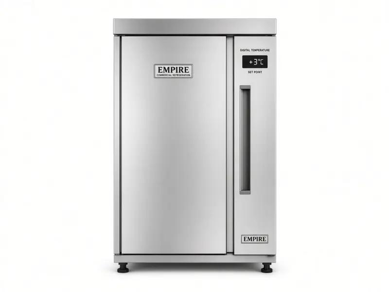

Commercial refrigeration only - 24/7 emergency - 25 mile radius
Empire commercial fridge repair for restaurants, pubs and shops in North London and London. Gold-standard probe checks, not guesswork.

Empire fridges turn up in independent restaurants, gastro pubs and boutique hotels that bought a solid stainless cabinet and then ran it hard. When that cabinet warms, the pass stops. Cold Direct offers Empire fridge repair as a commercial-only service. We cover North London and a 25 mile radius through London, Hertfordshire and Essex. Body of the site stays white. This page uses gold buttons and a light cream hero so the layout stays clean, not a black screen.
Empire faults we diagnose with a temperature probe: slow pull-down after a busy service, iced evaporators after a door left on the latch, noisy fans, leaking door furniture, and controllers that have lost their set point after a power cut. We write air and core-food temperatures so you can show the EHO you did not run blind. A warm Empire fridge is an EHO risk the same as any other trade brand.
On site we quote before we start. If the condenser is packed, a clean may restore the cabinet. If a compressor is down, we give you a cost and a time, not a surprise invoice. 24/7 emergency Empire fridge repair is for Saturday nights in Westminster, Camden and Islington, and for early prep in Barnet, Harrow, Watford and the City. The same radius includes Enfield, Finchley, Wood Green, Tottenham, Stratford, Romford and Ilford as covered towns, not as a single-town base.
Call Mobile 07983 759320, Freephone 0800 112 3427 or London Office 0203 952 4822. We are North London Commercial Refrigeration Engineers. We do not book domestic houses. Empire commercial cabinets, prep counters and uprights are the work. If the plate says Empire and the kitchen is a trade kitchen, we will attend.
Empire stainless gets dented, doors get slammed, and kitchens get hot. Heat around an Empire condenser in a basement kitchen in Hackney is a different job from a well-ventilated store room in Southgate. We look at airflow first, then electrics, then the sealed system. That order saves money. It also gives you a story you can tell an EHO: we found the cause, we probed the food, we restored the legal band.
Related pages: Polar fridge repair, Williams freezer repair, fridge repair London, Sub-Zero fridge repair.
Empire fridge repair in London is a commercial-only job because the cabinets are specified for restaurants, not for a kitchen at home. We carry trade gaskets and fans, and we write probe temperatures so a manager in Camden, Islington or the City can show an EHO what the food was doing when we arrived. Gold buttons on this page are branding. The body stays white. 24/7 emergency cover runs across a 25 mile radius from North London, including Barnet, Harrow, Watford, Finchley, Wood Green, Hackney, Haringey, Stratford, Romford, Ilford, Enfield, Southgate, Westminster and the rest of Greater London. If the Empire cabinet is on a prep line and the display disagrees with the food, we believe the temperature probe. Call mobile 07983 759320, freephone 0800 112 3427 or London office 0203 952 4822 and tell us it is Empire.
Yes. We repair trade Empire cabinets in restaurants, pubs and shops. We do not book domestic houses.
Yes, across a 25 mile radius from North London. Call the mobile for night and weekend emergencies.
Yes. Probe readings are part of the job so you have numbers for HACCP and the EHO.